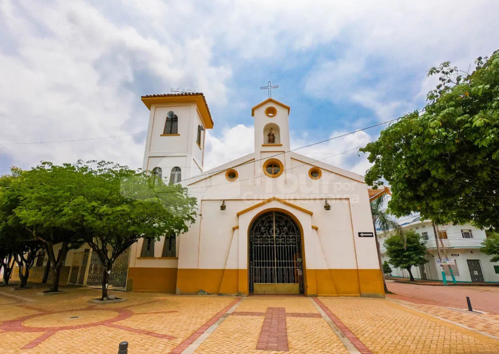

CASA LOTE EN APULO CUNDINAMARCA
APULO, anteriormente conocido como Rafael Reyes, es un municipio turístico de Cundinamarca, Colombia, ubicado en la provincia del Tequendama, a unos 101 km al suroccidente de Bogotá. Con una temperatura promedio de 28°C y una altitud de 400 m s. n. m., es un destino popular de clima cálido para el descanso, el turismo, y actividades al aire libre,Informacion adicional
Google Maps